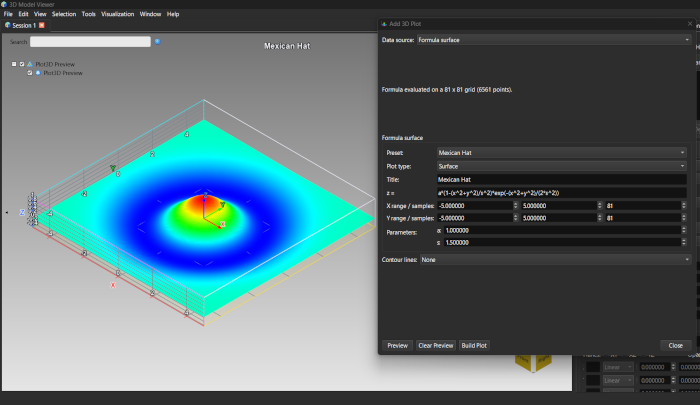
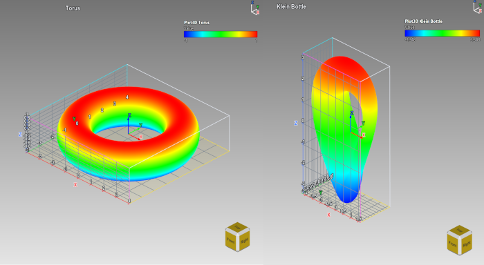
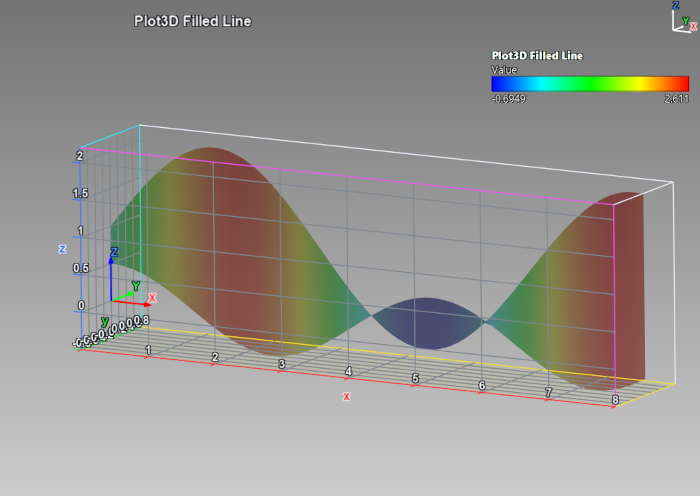
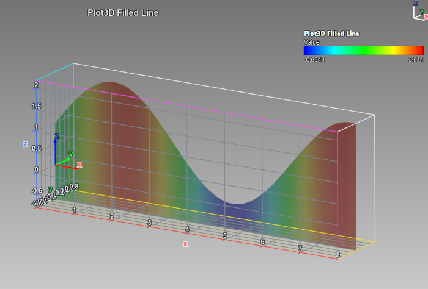
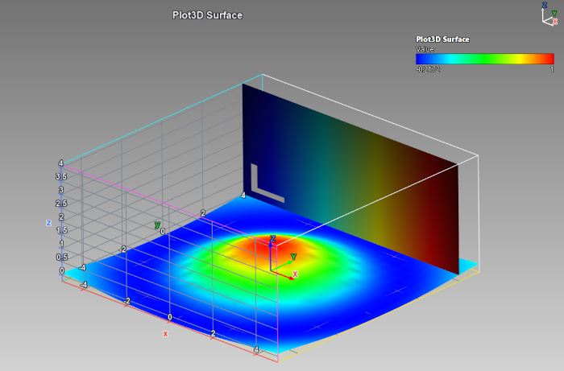
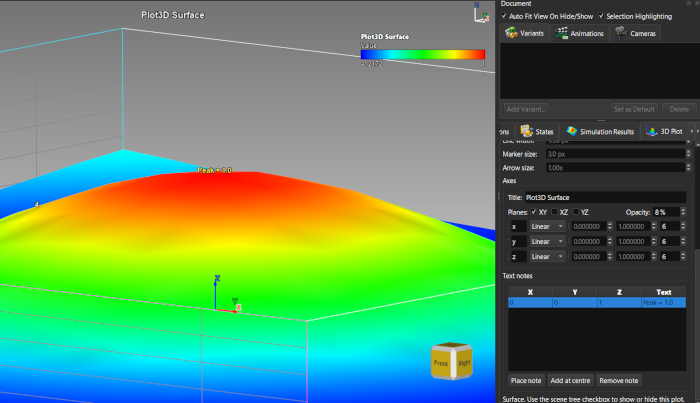
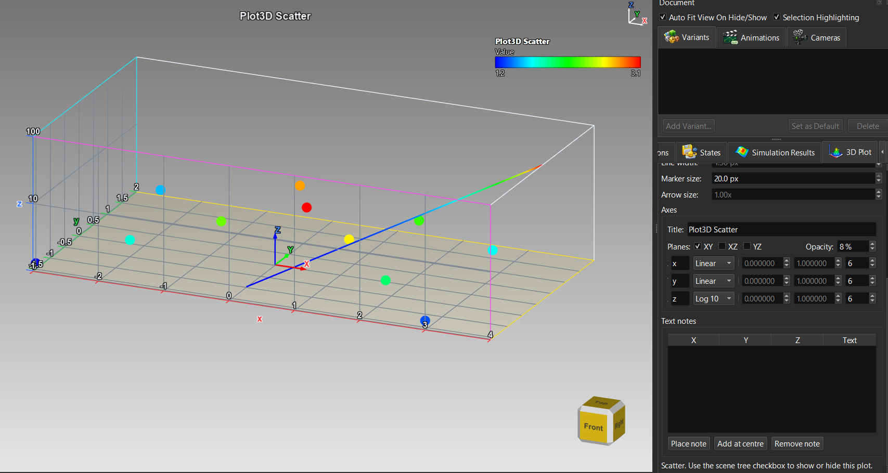

Lección 24: Gráficos 3D a partir de fórmulas, rellenos, imágenes y notas
Introducción
No necesita un archivo para crear un gráfico. Una fórmula puede generar una superficie, una curva, un campo vectorial o el flujo de una partícula; los rellenos convierten líneas y puntos en cintas y cortinas; una imagen puede colocarse sobre un plano; las notas de texto etiquetan lo importante; y todos los gráficos de un documento comparten un conjunto de ejes, que puede ser logarítmico.
Superficies por fórmula

La superficie por fórmula Mexican Hat, con el diálogo y la línea de estadoEl mismo diálogo ofrece también Superficie paramétrica (Torus, Ellipsoid, Mobius Strip, Klein Bottle, Superellipsoid, Helicoid, Catenoid, Enneper Surface, Spherical Harmonic), Curva paramétrica (Helix, Lissajous, Trefoil Knot, Viviani Curve, Damped Spiral; el parámetro se llama t), Superficie implícita y Campo vectorial por fórmula.

Un toro y una botella de Klein creados con preajustes paramétricosEditar un gráfico generado
Los gráficos de fórmulas recuerdan la definición con la que se crearon. Seleccione uno en Gráfico activo, haga clic en Editar gráfico..., cambie una expresión, un rango o un parámetro y haga clic en Recrear gráfico: el gráfico existente se actualiza en su lugar y conserva su título, visibilidad, colores y ajustes de ejes. El tipo de fuente no se puede cambiar al editar; cree un gráfico nuevo para eso.
Rellenos: cintas y cortinas
Una línea o un gráfico de dispersión se puede rellenar hasta un plano base o entre dos curvas. Los rellenos son translúcidos y se colorean como el gráfico.
| Objetivo | Cómo |
|---|---|
| Una cortina bajo una línea | line_helix.csv como Línea / Curva, active Rellenar hasta la Z base con base 0. |
| Una banda entre dos curvas | line_band.csv como Línea / Curva, Valor de color = value, active el relleno y elija z2 en o entre la línea y la columna. |
| Cintas desde puntos de dispersión | scatter_clusters.csv como Dispersión, active Rellenar hasta la Z base con una base como -3; o scatter_band.csv con z2 para cintas entre dos conjuntos de puntos. |
| Rellenar una curva generada | Curva paramétrica con el preajuste Helix: active Rellenar la curva hasta la Z base, o escriba un segundo z2(t) como 2 + sin(t) para rellenar entre las dos curvas. |

Una banda translúcida entre dos curvas que se cruzan, que se estrecha hasta una línea donde se cruzan
La hélice con una cortina hasta el plano baseImágenes en un plano
Una imagen puede colocarse sobre uno de los planos del gráfico: un mapa de situación bajo una superficie, un escaneo junto a un modelo. Fije Origen de los datos en Imagen en un plano, elija un archivo de imagen, el plano (XY plano en el mínimo de Z, XZ o YZ vertical) y los rangos; estos se adaptan a la forma de la imagen al elegirla. Opacidad deja ver lo que hay detrás. Vista desde atrás, una imagen se lee reflejada; para una imagen opaca, active Legible desde atrás.
image_gradient.png (320 x 200, con una «L» en una esquina, que muestra si la imagen está reflejada) y image_gradient_alpha.png, cuya propia transparencia se combina con el ajuste de opacidad. «Legible desde atrás» solo está disponible para una imagen opaca al 100 % de opacidad.

Una imagen sobre un plano junto a un gráfico de superficieNotas de texto
Las notas se dibujan en su punto de datos dentro de la caja de ejes, siguen la visibilidad del gráfico y se guardan con la sesión.

Una nota en el pico de una superficieEjes compartidos y escalas no lineales
Todos los gráficos de un documento se dibujan en un único conjunto de ejes. En Ejes, en la pestaña Gráfico 3D, fija la etiqueta de cada eje, la Escala del eje (Lineal, Log 10 o SymLog), el rango y el número de marcas. Cambiar una escala redistribuye todos los gráficos a la vez: líneas, dispersión, superficies, barras, flechas y cuadrículas de vóxeles la siguen.
scatter_error_bars.csv como gráfico de dispersión y luego line_growth.csv como Línea / Curva (z = 10^(x/2), de 1 a 100).line_helix.csv, que llega a 0, mientras Z está en Log 10 devuelve Z a Lineal con un mensaje de estado; intentar fijar Log 10 con un gráfico así presente se rechaza con un mensaje que indica el motivo. SymLog admite cualquier dato, incluidos los valores negativos.
Un gráfico de dispersión y una línea exponencial compartiendo un eje Z logarítmico